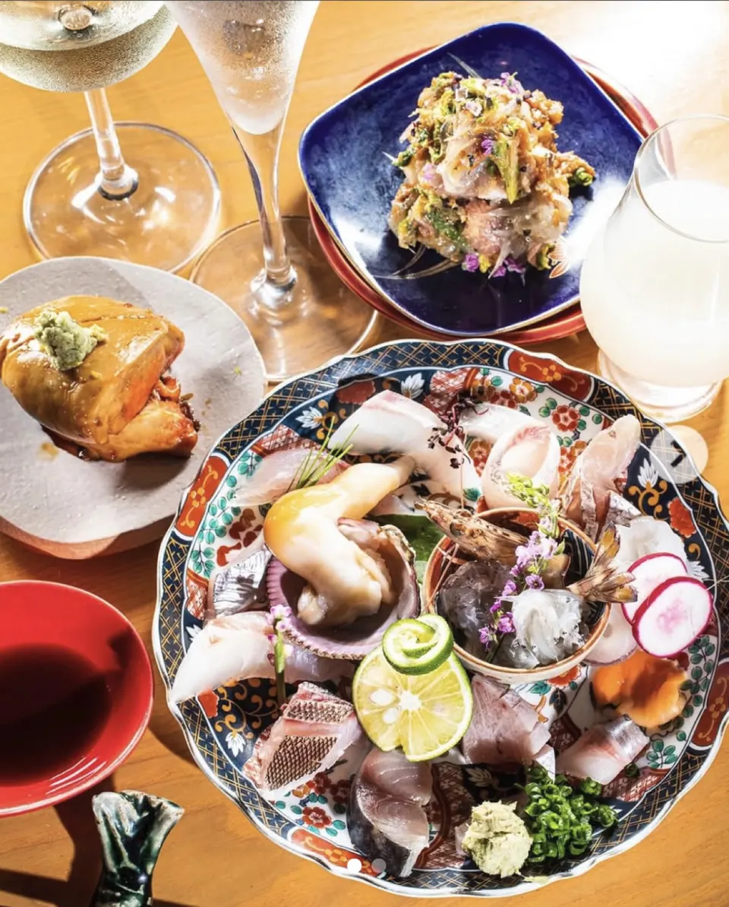
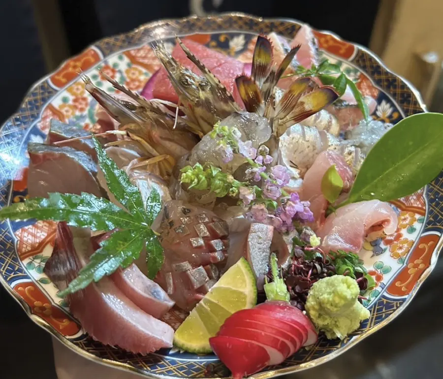

03 / STORY
料理人とカウンター
最高の素材を
最高の状態で。
カウンター越しに料理が仕上がる気配。素材のこと、酒のことを交わしながら、自然体で過ごせる夜があります。
近い距離で味わう、旬のひととき。
TOKYO / OGIKUBO
魚も、肉も、野菜も。その日の素材を、炭火と一皿に。
日本酒を傍らに、気負わない和食の夜をどうぞ。

旬を味わうひとときを。
店のこと
02 / ABOUT
荻窪で旬の料理と日本酒を楽しめる、とみ笑。カウンターを中心に、料理をつくる手がすぐそばにある距離感を大切にしています。
炭火の香り、器に盛られる一皿。その日の味を、ゆっくりと。
03 / STORY
最高の素材を
最高の状態で。
カウンター越しに料理が仕上がる気配。素材のこと、酒のことを交わしながら、自然体で過ごせる夜があります。
近い距離で味わう、旬のひととき。
04 / ACCESS
荻窪駅北口から徒歩4分。
ご予約はお電話またはInstagramで。
※ 営業時間や休業日は変更となる場合があります。来店前にお電話でご確認ください。
05 / RESERVATION
ご予約・空席状況の確認は、お電話またはInstagramで承ります。
06 / NEWS
Instagram の投稿はこちらから。営業時間など、ご来店に関することはお電話でもご確認ください。
Instagramを見る